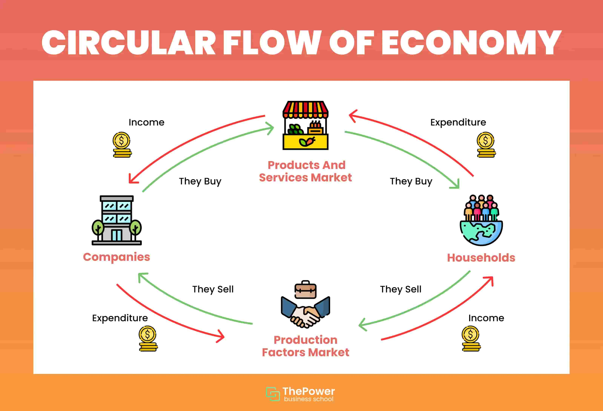

總體經濟學導論
刻畫總體經濟學基本概念。
個體經濟學(microeconomics)研究的焦點是個別的消費者與廠商如何在市場中進行決策與互動。而總體經濟學(microeconomics)則是研究整個經濟體系(the economy as a whole)，以及政府政策的改變如何影響經濟體系中行為者的決策與互動。
總體經濟學研究的範疇可以包含以下幾點：
為何有些國家比多數國家還有富有？
為何有些國家的經濟成長速度比其他國家還要快？
為何多數美國人的生活水準較其父母甚至祖父母輩還要高？
政府在經濟體系中扮演什麼樣的角色？
因此，總體經濟學的研究具有三個特性：
跨時期(inter-temporal)：研究不同時期的政策、經濟變化
總合面向(aggregate)：由於研究的標的是整個經濟體系，因此多聚焦於總合需求、供給，而非著重在個人或是單一商品
一般均衡(general equilibrium)：聚焦在多個市場，因此分析途徑為一般均衡而非部份均衡(partial equilibrium)
總體經濟學家衡量經濟的表現均是以總合的趨勢分析與判斷，因此若一個經濟體中的廠商受到經濟衝擊後資本下降、勞工所得也隨之下降，並不是總體經濟學家所要關注的議題；但若一個經濟衝擊導致整體經濟下滑、GDP 銳減（例如 COVID-19），如此就變成總體經濟學家要關注的事件了。
上面提到總體經濟學要探討另一個面向是不同時期經濟的變化，故總體經濟學多會使用時間序列(time series)分析，也就是同一個變數在不同時間點的不同表現，一般來說我們都會以下標(subscript)表示時間，如 \(y\) 代表總合產出，而 \(y_{1}, y_{2}, \cdots, y_{T}\) 則表示在不同時間點的觀察值(observation)。其中我們又以資料頻率的不同粗分為日資料、月資料、年資料。
研究總體經濟前的先備知識
在進入總體經濟學之前，我們要先理解總體經濟學研究的分析工具與標的，以便未來分析時能夠快速了解背後的邏輯與內涵。
國內生產毛額(Gross Domestic Product, GDP)
總體經濟學家在衡量經濟表現時，大多會以國內生產毛額作為指標，其反映的一國在境內所生產的最終商品與服務，在一定時間內所能夠獲得的市場價值。
The market value of the quantity of goods and services produced within a country at a particular period of time
資料轉換(Data Transformation)
分析總體資料時，我們多半會將資料進行轉換，原因在於這些資料的數值很大以致於不易運算。一個常見的手法是取自然對數(natural logarithm)。舉例來說，如果我們要探討從時點 \(t-1\) 到 \(t\) 的淨經濟成長率時，令成長率為 \(g_{t}\)，則 \[ g_{t} = \frac{y_{t}}{y_{t-1}} - 1 \] 但如果 \(g_{t}\) 很小，就可以利用泰勒展開(Taylor expansion)與自然對數得到近似，即： \[ \ln y_{t} - \ln y_{t-1} = \ln (1+g_{t}) \approx g_{t} \]
資料拆解(Data Decomposition)
通常總體經濟學家會將時間序列的資料拆成兩個部分，一個是與經濟成長(growth)有關，另一個則是與景氣循環(business cycle)有關，如： \[ y_{t} = \underset{\text{trend}}{g_{t}} + \underset{\text{cycle}}{c_{t}} \]
透過上面拆解的方式，我們可以經濟成長與景氣循環利用不同的因素與理論解釋。
經濟成長：長期的成長趨勢多與人口結構(demographic structure)或技術因子(technical factors)等變數有關。
景氣循環：因為變動快速，無法用長期的因素解釋，故將其歸類在景氣循環。
不過我們一開始必定無法得知要如何拆解，因此可以透過以下幾個方式進行分解：
線性時間趨勢(linear time trend)：若資料與時間相關，我們可以拿資料對時間跑迴歸。如： \[ g_{t} = a + bt \]
非線性時間趨勢(non-linear time trend)：若我們認為資料為非線性，則可以對其跑二次甚至高次方的迴歸。如 \[ g_{t} = a + bt + ct^{2} \]
HP 濾波(Hodrick-Prescott filter)：是一種用於平滑時間序列數據的統計方法，目的是為了避免成長趨勢不要有太劇烈的變化，另一個則是希望景氣波動不要偏離 \(0\) 太多。
總體經濟模型
所謂模型(model)，可以理解為一個將現實生活中不相關的因素移除後的世界。
Simplified versions of more complex realities with irrelevant details stripped away
移除不重要、不相關的因素目的是為了能夠更好地聚焦在我們所關注的因數上，試圖了解因素間如何交互影響。
一個總體經濟模型會包含以下幾個重要的元素：
經濟體系的經濟行為者(economic agents)
經濟個體對不同商品的偏好(consumer’s preference)
經濟個體在生產商品時所可以使用的生產技術(technology)
經濟體系中可用的資源(resources available)
經濟個體的行為是在最適化下(under optimization)所決定的
經濟行為者
我們大致可以將經濟體系中的行為者區分為消費者(consumer)、廠商(firm)、政府(government)、國外部門(foreign sectors)。
消費者考慮其在經濟體系中應該在有限的預算下購買什麼商品；廠商考慮在有限的資源與技術限制下如何生產商品、商品應該販售的對象、應該如何訂定商品價格、應該雇用多少員工；政府則是要根據當前通貨膨漲高低、就業市場狀況制定相關經濟政策（如消費券、三倍券、五倍券）；國外部門要思考的是應該進口多少商品、出口多少商品。
經濟體系中的市場
我們可以依據市場所交易、販售的內容劃分為商品市場(good market)、勞動市場(labor market)、債券市場(bond market)等。
綜上，我們可以用經濟周流圖(circular flow of diagram)描述一個經濟體系中不同行為者之間的互動。

Footnotes
Roca, C. (2022, November 9). Circular Flow Diagram: definition and examples (2022). ThePower Business School. https://www.thepowermba.com/en/blog/the-circular-flow-diagram-definition-examples-and-more↩︎
Reuse
Citation
@online{sung2023,
author = {Sung, Anthony},
title = {總體經濟學導論},
date = {2023-07-22},
url = {https://yueswater-blog.netlify.app/posts/2023-07-22-macro-intro/},
langid = {en}
}